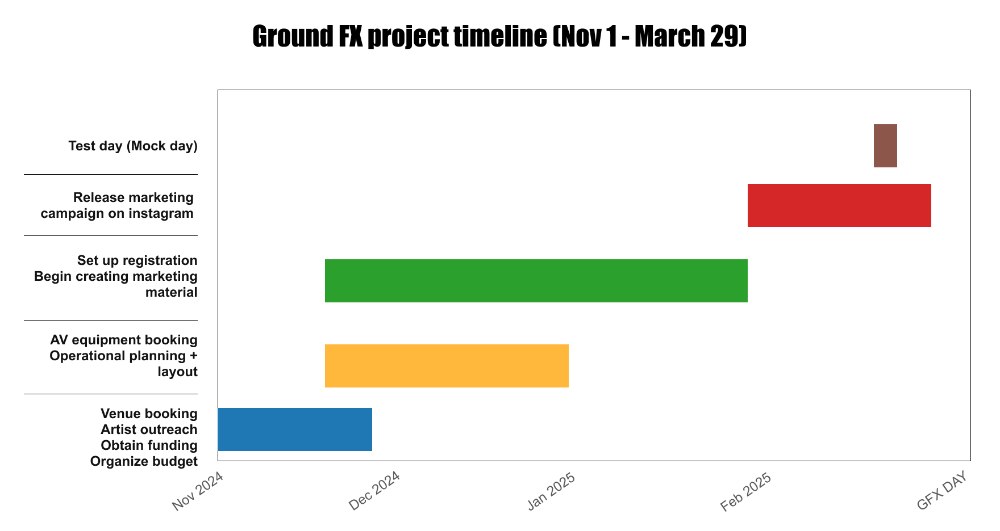
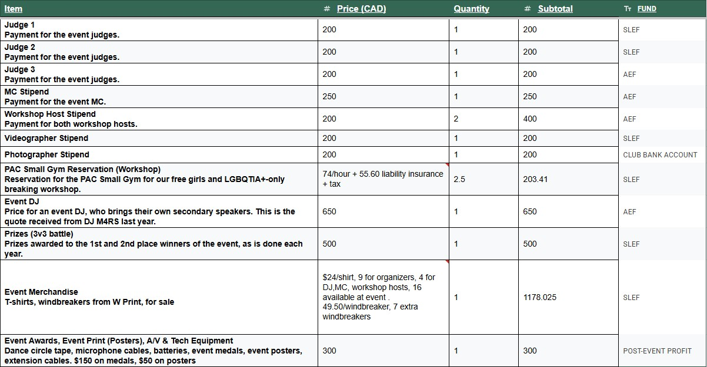
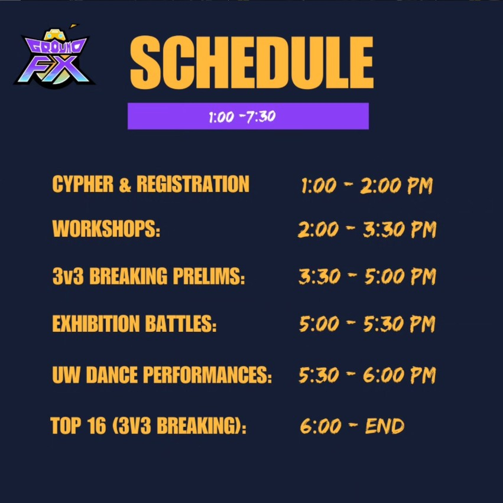

Ground FX: The breakdown


Introduction
During my third term I had the honour and privilege of directing the operations of Waterloo's 30-year-old tradition, Ground FX, the biggest breakdancing competition in the city of Waterloo. On March 29, our team hosted the annual breaking competition organized by UW Breakers, bringing together university students, Toronto dance crews, and the broader hip-hop community for a full day of competitive battles and workshops, in collaboration with 9+ artists and community partners.
As Project Manager and Marketing Lead, I oversaw the strategic planning, outreach, promotion, and execution of the event. Beyond the numbers, Ground FX strengthened cross-city dance connections, elevated the club's presence, and created a space that celebrated hip-hop culture on campus.

Main objectives
Being passed the torch for a 30-year tradition is a huge responsibility. To give myself clarity, I broke the event down into four areas of ownership.
Strategic planning & outreach
Secure the venue for both the battle and workshops, and reach out to artists for DJing, MCing, judging, hosting workshops, vending, and dance crews.
Funding & budget
Acquire funding from the school government and endowment funds, budget compensation for each artist, and prepare organized pay on time.
Operations & logistics
Oversee execution of the event: plan the itinerary, and set up the venue, sound system, judging system, and registration system.
Marketing & branding
Build a fun brand aesthetic for the event and create excitement through merch, videos, posters, and websites.
The team
An event is nothing without its key players. The elements of hip-hop outlined what needed to take priority: DJing, MCing, breaking, knowledge, and graffiti. We reached out through email, Instagram, and in-person requests to bring this team together.

MCThe master of ceremonies orchestrates the event. This year we invited Switch B, who recently did sports commentary for the 2024 Summer Olympics.

DJThe music man of the event, dictating the tunes and beats the dancers battled to.

JudgesThree veteran dancers who determined the winner of each battle.

Workshop hostsBefore the main event we hosted an advanced breaking workshop and an intro-to-breaking workshop for women and LGBTQIA2+ dancers.

Dance crewsLocal crews like UWhiphop and UWstreetdance, along with other university breaking clubs, performed exhibitions between battles.

VendorsExternal and internal vendors selling shoes, street fashion, and hats alongside the battles.
Process
Five months of runway
Planning started on November 1, five months out. Venue booking, artist outreach, funding and the budget came first, then A/V and the floor plan, then registration and marketing, with the Instagram campaign released in the final weeks.

Venue and floor plan
The majority of Ground FX takes place in the SLC Lower Atrium, so securing that venue was a top priority alongside confirming our artists. Once the space and talent were locked in, my team and I mapped out the floor plan, registration area, judge seating, sponsor tables, and DJ setup for the best flow and audience visibility.

Budget and funding
With the team, I built and managed a detailed budget covering artist compensation, media coverage, venue reservations, prizes, merchandise, and A/V, then pitched WUSA and Artist Endowment Funds to secure it.

The test run
To ensure seamless execution, we ran a full test-through the weekend before the event, role-playing it start to finish to catch dead ends before the real day. The day before, we tested the projector and lighting on site.
The day itself
On March 29, doors opened at 1:00 PM for the cypher and registration, followed by the workshops, 3v3 prelims, exhibition battles and UW dance performances, before the top 16 took the floor from 6:00 PM.

Branding
From the Instagram visuals to the physical décor throughout the venue, I wanted this year's Ground FX to have a distinct, memorable visual identity. I was deeply inspired by graffiti culture, and wanted that raw, expressive energy to shape the event's look and feel.
I remember sketching logo concepts while watching passing trains, each one layered in graffiti. From there the identity came together, grounded in street art but still cohesive and intentional across every touchpoint.


The logo system: the primary mark, its palette, and lockups for dark, light and purple grounds.
Promotional media
Alongside the branding, I produced the promotional video series for Ground FX's Instagram: a full mixed-media recap shot on a rented gimbal, a teaser, the official announcement post, and a second logo rendition used as a closer.
The recapA dynamic, mixed-media video shot on a rented gimbal, showcasing Waterloo's breaking scene.
The teaserA first taste of what was to come, released ahead of the event.
The announcementThe official post with the full event details.
Logo renditionA second take on the GFX logo, used as a signature closer across the video series.
Creating GFX merch
Along with the dance battles, another tradition Waterloo alumni keep alive is the swag. Every year the club creates new Ground FX-themed merch. Designing and marketing that merch was another piece I got to lead.


My takeaways
Ground FX was more than an event. It was a full-scale production that required strategic planning, strong branding, and disciplined execution. Leading both project management and marketing let me bridge structure with creativity, and strengthened how I manage stakeholders, budgets, and brand identity all at once.
The earlier the better
Starting the planning five months early was the right call. Every schedule carries the hidden cost of time lost to third-party hiccups, and starting early prevents the last-minute panic.
Bite-sized pieces
This was one of the biggest events I've held, and starting from zero was daunting until the team broke it into smaller milestones, and planning became far more manageable.
Next project